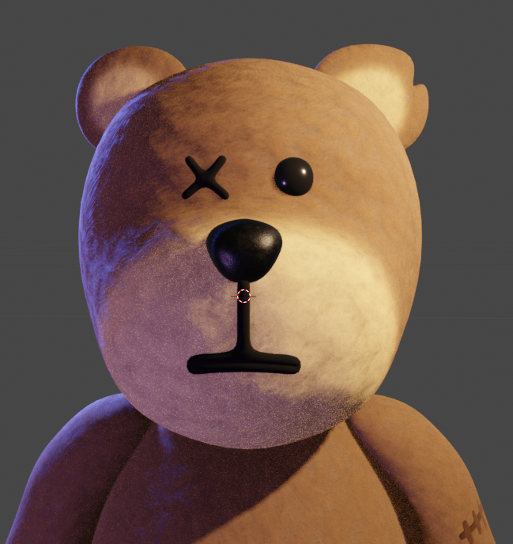
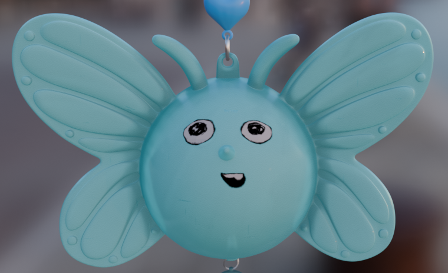
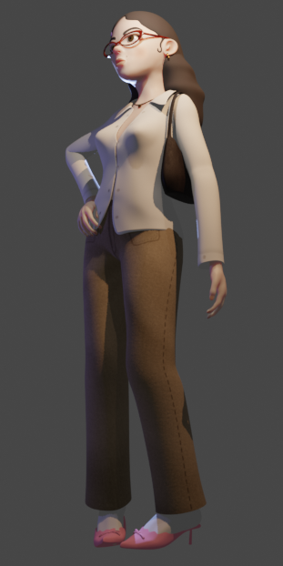
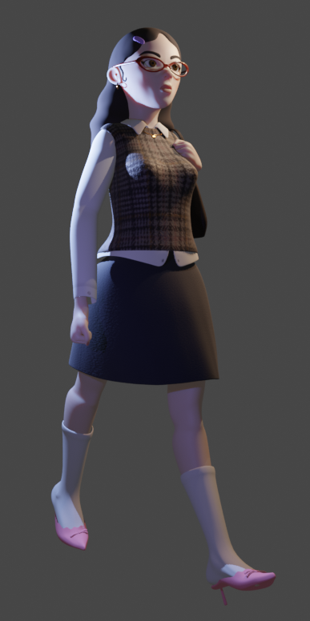

01
Projet Longtemps
The Longtemps project is a 3D clip project for an Agathe Lartigue's song.
2026
SectorMusic
We are doing this project on a small team of 3, in which I'm working as an art director, but also as a 3D modeler and animator.

Focused on Agathe's music

The world's most boring workplace

A traditional Parisian Street

Here comes the bear, one of our mains protagonist in this story



We welcome Billy, on our left, that is the hero of this story. It is a butterfly-toy that is chained to Thib's phone, that we can see on our right, she is the most basic parisian girl, and our "antagonist", even tho she is not evil, she is just a little stupid.




This story, written and directed by Agathe Lartigue, was created in 3D by Martina Doll, Leo Mourray, both modeler and animator, and me, a modest modeler.